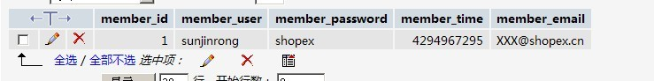

meta_register 用于存储扩展字段的一些信息 meta_value_datetime meta_value_decimal meta_value_int meta_value_longtext meta_value_text meta_value_varchar 用于存放数据，不同的数据类型存放在不同的表中 recycle
什么是meta扩展？
在不改动原表的情况下，增加扩展表字段。在二次开发中不推荐直接修改dbschema文件，那么在不修改原来dbschema(表)的情况下， 推荐使用meta扩展来增加要修改表的字段
怎么使用meta扩展？
<?php
...
function __construct($app){
parent::__construct($app);
//使用meta系统进行存储
$this->use_meta();
}
...
注册字段一般会在进行安装app的时候进行注册，所以一般注册字段方法会放在task.php文件中 还有一种是放在model中，先判断表中是否有需要注册的字段，如果没有则进行注册.
在需要注册的表对应的model中加入如下方法
<?php
...
//方法名自定义
//在注册的时候对此方法进行调用，则对表添加了一个新的字段
public function mytest(){
//和dbschema里的*列定义*一样， 但是没有pkey,extra,title定义
$column = array(
'qq'=>array (
'type' => 'number',
'required' => false,
'label' => __(' 短值测试列'),
'width' => 110,
'editable' => false,
),
);
return $this->meta_register($column);//注意：这只可以注册一个字段,如果要一次注册多个字段则可以循环
}
...
<?php
...
//会在安装app的时候调用,进行注册
function post_install($options){
$obj = app::get('b2c')->model('member');
$col = array(
'qq'=>array (
'type' => 'number',
'required' => false,
'label' => __(' 短值测试列'),
'width' => 110,
'editable' => false,
),
);
$obj->meta_register($col);
}
...
注册字段成功后我们会发现在sdb_dbeav_meta_register表中会有一条这样的记录
meta扩展前

<?php
...
$arr = $this->app->model('member')->getList('*');
echo '<pre>';
print_r($arr);
...
meta扩展后
function save() {
$filter = array(
'member_user' => 'XXXX',
'member_password' => md5('shopex'),
'member_email'=>'XXXX@qq.com',
'member_time'=>time(),
'qq'=>1111111,
);
$this->app->model('member')->save($filter);//保存数据
//保存后查询
$arr = $this->app->model('member')->getList('*');
echo '<pre>';
print_r($arr);
}
此记录在数据表中的表现方式是：
在ECOS中对数据表进行多表操作，推荐使用dbeav中的内置的方法(save,dump,delete)进行多表操作
如果要使用dbeav中的多表操作方法进行多表操作则需要进行如下配置
对表进行关联在ECOS中有两种方法,一种是直接在dbschema中进行定义，另外一种是用has_many，has_one进行关联
<?php
...
#这是goods表中的一个字段
#这个表示的是goods表中的type_id关联到goods_type表中的type_id
...
'type_id' =>
array (
'type' => 'table:goods_type', //关联goods_type表
'sdfpath' => 'type/type_id', //关联goods_type表中的type_id字段
'label' => app::get('b2c')->_('类型'),
'width' => 75,
'editable' => false,
'filtertype' => 'yes',
'in_list' => true,
'default_in_list' => true,
),
...
has_many,has_one 用法类似，都是标明表的关系 has_many 标明表的对外一对多 has_one 标明表对外为一对一
语法
var $has_many = array(
'sdfkey'=>'表名(@app名):操作:字段关联',
....
);
| 名称 | 说明 | 默认值 | 必须 |
| sdfkey | 对应关系在sdf树中的挂载点名 | 无 | √ |
| 表名 | 对应的表名 | 无 | √ |
| 操作 | save的操作方式( append:只对导入数据做save保存不对数据库原有数据做操作；replace:先删除数据库原有所有相关数据 再对导入数据做save；contrast:和数据数原有数据做比对 导入数据原有数据存在库中做update 不存在insert 数据库存在未导入数据delete) | append | |
| 字段关联 | 本表字段^关联表字段 2表之间 | 本表主键 与 对应表dbschema中"type=>table:本表名"字段 不能关联用此方法标识对应关系 |
<?php
class b2c_mdl_goods extends dbeav_model{
var $has_many = array(
'product' => 'products:contrast',
'rate' => 'goods_rate:replace:goods_id^goods_1',
'keywords'=>'goods_keywords:replace',
'images' => 'image_attach@image:contrast:goods_id^target_id',
'tag'=>'tag_rel@desktop:replace:goods_id^rel_id',
);
var $has_one = array(
);
为什么要配置subSdf?
一个主表可以关联多个子表，但是有些操作则只需要对一个主表和其中关联的一个子表进行操作。那么则需要定义subSdf来进行过滤
var $subSdf = array(
'key'=>array('field' subsdf),
':Foreign key'=>array(
'field',subsdf
),
)
| 名称 | 说明 |
| key | has_many/has_one定义键值 支持xpath语法 |
| field | 子表所需输出字段 |
| Foreign key | dbschema定义的外键表名 :前有string可以自定义外联表数据在sdf树中的键名 |
| subsdf | 子表subsdf |
标准sdf结构的subsdf定义在model中
例:model/goods.php
var $subSdf = array(
'default' => subsdf ......
);
default 为默认，可以自定义别的写法 basic,simple等等等
如果 $subSdf 未定义则为$has_many,$has_one的集合
例：
<?php
class b2c_mdl_goods extends dbeav_model{
var $has_many = array(
'product' => 'products:contrast',
'rate' => 'goods_rate:replace:goods_id^goods_1',
'keywords'=>'goods_keywords:replace',
'images' => 'image_attach@image:contrast:goods_id^target_id',
'tag'=>'tag_rel@desktop:replace:goods_id^rel_id',
);
var $subSdf = array(
'default' => array(
'keywords'=>array('*'),
//第二个参数是has_many定义的proudct所对应的products中关联表的subSdf
'product'=>array('*',array('price/member_lv_price'=>array('*'))),
':goods_type'=>array('*'),
':goods_cat'=>array('*'),
/*'tag'=>array('*',array(':tag'=>array('*'))),*/
'images'=>array('*',array(':image'=>array('*')))
),
'delete' => array(
'keywords'=>array('*'),
'product'=>array('*',array('price/member_lv_price'=>array('*'))),
'images'=>array('*')
)
);
使用方法:$goods = $oGoods->dump($goods_id,'*','default');
在_filter是对base_db_model中filter的扩展
扩展的数组
$FilterArray= array(
'than'=>' > '.$var,
'lthan'=>' < '.$var,
'nequal'=>' = \''.$var.'\'',
'noequal'=>' <> \''.$var.'\'',
'tequal'=>' = \''.$var.'\'',
'sthan'=>' <= '.$var,
'bthan'=>' >= '.$var,
'has'=>' like \'%'.$var.'%\'',
'head'=>' like \''.$var.'%\'',
'foot'=>' like \'%'.$var.'\'',
'nohas'=>' not like \'%'.$var.'%\'',
'between'=>' {field}>='.$var[0].' and '.' {field}<'.$var[1],
'in' =>" in ('".implode("','",(array)$var)."') ",
'notin' =>" not in ('".implode("','",(array)$var)."') ",
);
代码：
$filter = array(
'id|than'=>1,//这个表示 id>1
'filter_sql'=>' `name`= wuwei or sex=male', //filter_sql 可以自己写sql语句
);
统计满足条件的记录条数
function count(){
$filter = array(
'member_user'=>'XXXX'
);
$this->app->model('member')->count($filter);
}
用法和传递的参数和base_db_model中的getList 一样
如果用到 了meta扩展则需要调用dbeav中的getList.
加了一层判断，如果在做插入的时候,有用到过 meta 扩展则要做是否注册此扩展字段
insert用法参照： insert
使用dbeav中的dump进行多表查询，则需要（先进行多表关联）配置$has_many,$_has_one,subSdf
function dump($filter,$field = '*',$subSdf = null)
$subSdf 中是在 var $subSdf 中定义的节点，如果没定义，则是$has_many,$has_one的集合
例：
<?php
class notebook_mdl_members extends dbeav_model{
var $has_many = array(
'member_lv'=>'member_lv:append:member_lv_id^member_lv_id', //这表示在member表中有关联了三个表
'pam_account'=>'pam_account@pam:append:member_id^account_id',
'item'=>item:append:member_id^member_id,
);
var $subSdf = array(
'default' => array(
/*第一个参数则是members中所要查询的字段
*第二个参数表示是members表中的子表item的$subSdf,如果在item中没有关联的子表则以 null 代替
*array( 0,2,'item_id DESC' )此参数表示在item子节点中：从0到2取三条记录，按照 item_id DESC 排序
*/
'item' => array('*',null,array( 0,2,'item_id DESC' )),
),
'delete'=>array('*'),
);
function __construct($app){
parent::__construct($app);
//使用meta系统进行存储
$this->use_meta();
}
function item_dump(){
$filter = array(
'member_id'=>10,
);
$aDate = $this->dump($filter,"*",'default');//dump1 输出的是$subSdf 中的item中定义的节点
echo "<pre>";
print_r($aDate);
}
}
Array
(
[member_id] => 10
[member_user] => XXXX
[member_password] => 1e236443e5a30b09910e0d48c994b8e6
[member_time] => 1305280926
[member_email] => XXXX@qq.com
[qq] => 1111111
[item] => Array
(
[3] => Array //注意这里 $subSdf 里面定义的排序
(
[item_id] => 3
[member_id] => 10
[item_subject] => fsdafsd
)
[1] => Array
(
[test1_id] => 1
[member_id] => 10
[item_subject] =>测试测试
)
)
)
注意：用dump进行多表连查则第三个参数是必须，否则查不出数据
使用delete进行多表删除，需要先进行多表关联（配置好has_many，has_one, subSdf）
function delete($filter,$subSdf = 'delete')
接着上面member的model,添加下面的方法
<?php
...
function member_delect(){
$filter = array(
'member_id'=>10,
);
$this->delete($filter,'delete');//会删除在$subSdf 中定义的节点
}
...
的记录全部删除了，但是表pam_account,中的account_id=10,的数据还没有删除，
因为在执行delete 的时候，节点删除是根据$subSdf中来删除的
注意：$this->delete($filter);如果没有定义删除节点，默认会把所有关联的子表的相关信息删除
用法和传递的参数和base_db_model中的update 一样
如果用到 了meta扩展则需要调用dbeav中的update.
如果需要用save做多表保存或则更新数据需要先进行上面的多表关联操作(配置好has_many，has_one, subSdf)function save(&$data,$mustUpdate = null)
| 名称 | 说明 | 结构 | 引用 | 必要 |
| $data | 需保存数据的 | sdf | √ | √ |
| $mustUpdate | 必须保存的结构说明 | sdf |
将单条sdf数据通过has_many,has_one配置递归save入数据库，联合主键表不支持递归save，返回bool，主键返回$data
例：刚才删除的时候把表item，member_id = 10,和 表 member,member_id=10中的数据都删除了，现在在保存；
<?php
...
function member_save() {
$filter = Array(
'member_id' => 10,
'member_user' =>'wuwei',
'member_password' => '1234656',
'member_time' => 1305280926,
'member_email' => 'wuweishopex.cn',
'qq' => 123456789,
'item' => Array
(
'1' => Array //注意这里$subSdf里面定义的排序
(
'item_id' => 1,
'item_subject' => 'jjjjjdsgfdgfd',
),
'3' => Array
(
'item_id' => 3,
'item_subject' => 'fsadfsdfsdfa',
),
)
);
$this->app->model('member')->save($filter);
}
如果需要用batch_dump做多表保存或则更新数据需要先进行上面的多表关联操作(配置好has_many，has_one, subSdf)
function batch_dump($filter,$field = '*',$subSdf = null,$start=0,$limit=20,$orderType = null )
根据$filter条件，getList出多个主键Id
在根据 主键Id dump出多条 subSdf